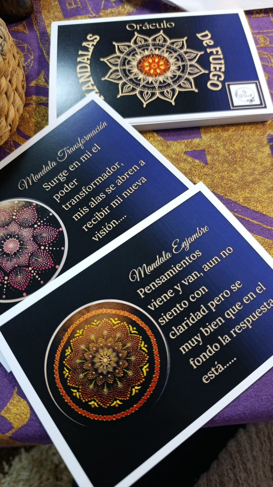
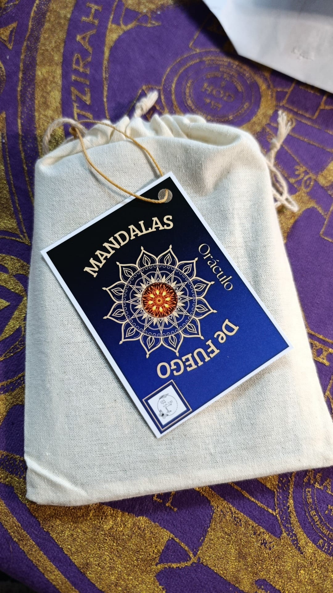
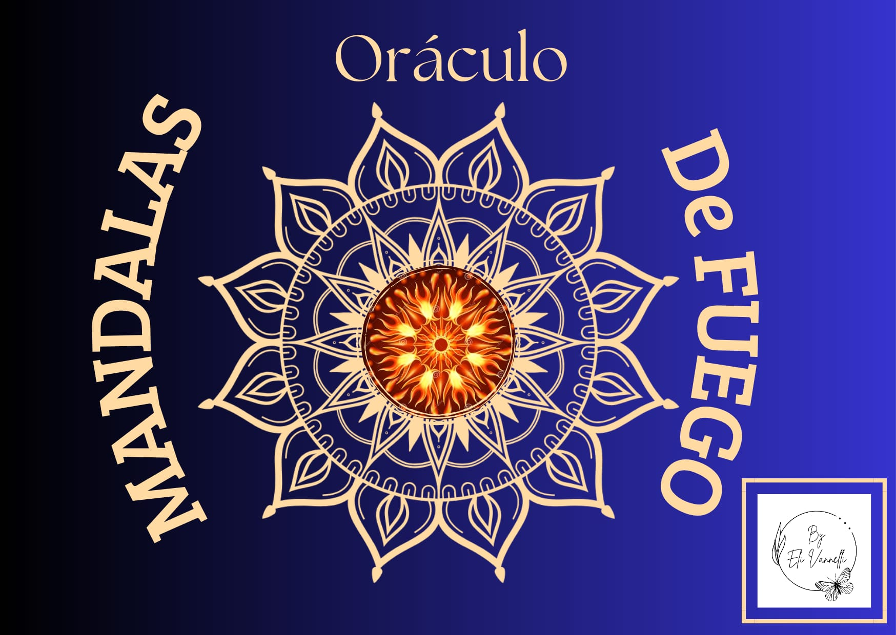

Texto a confirmar con Eli
Un oráculo de mandalas para conectar con la energía del fuego: transformación, fuerza y claridad interior.
$1.000
Consultar por WhatsAppOráculo
Un oráculo de mandalas para conectar con la energía del fuego.



Texto a confirmar con Eli
Un oráculo de mandalas para conectar con la energía del fuego: transformación, fuerza y claridad interior.
$1.000
Consultar por WhatsAppSeguí recorriendo
Mensajes de las hadas, protectoras y guías de la naturaleza.
Ver másMensajes sencillos para que niñas, niños y familias comprendan sus emociones.
Ver más